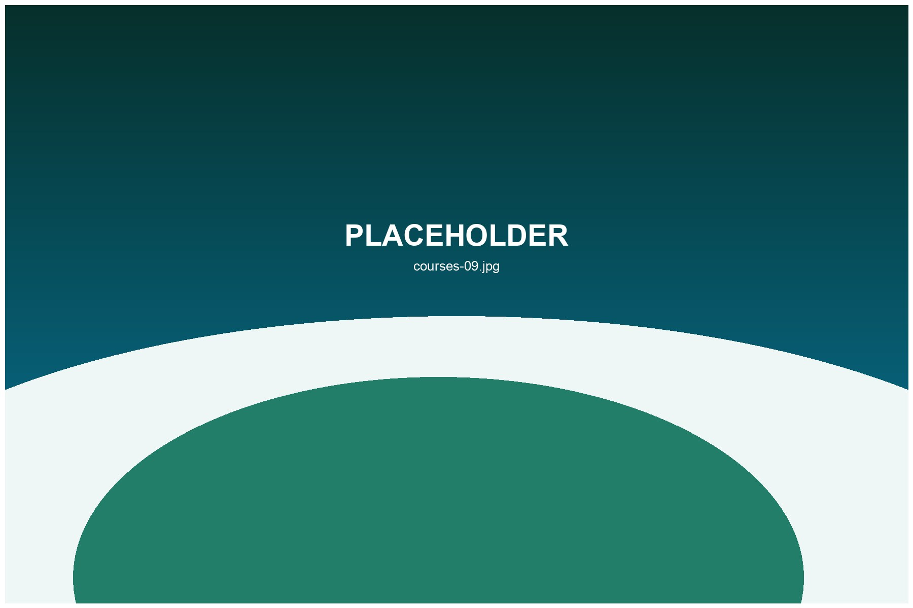

Ocean View Resort Course
Premium scenery, resort access and a strong choice for first-time Okinawa golf travelers.

Full course golf experiences for resort travelers, serious players and visitors planning a complete Okinawa golf day.
Use this page as the foundation for Okinawa 18 hole golf planning. Future data fields can include map location, difficulty, ocean view, beginner-friendly level, rental clubs and reservation support.

Premium scenery, resort access and a strong choice for first-time Okinawa golf travelers.
A relaxed layout suitable for casual players, mixed-level groups and visitor rounds.
More strategic golf for experienced players who want a fuller challenge.

Yes. Some courses are easier to book through local support, especially during busy travel seasons.
Many courses offer rentals, but availability and sizing should be confirmed before travel.
Support varies by course. Contact us for help preparing booking details.
Yes, but a 9 hole option or lesson may be better for complete beginners.